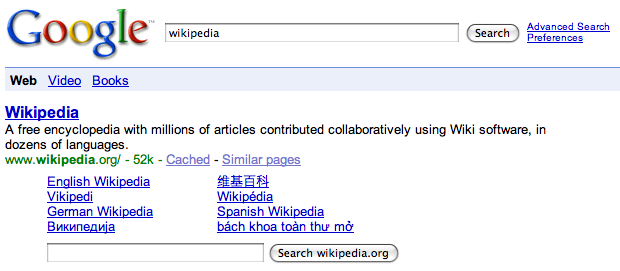

Some visual examples |
The presence of microformat data has been utilized by many search engines and site aggregators to provide features particularly amongst original microformats contributors and adopters.

Image of: Google results enhanced by Sitemap data
Image of: Yahoo results enhanced by hReview and other data
Image of: Yahoo list of events exposed
Image of: Yahoo event data can be exported easily
Offline software is also now commonly a consumer for online microformat data or for exposing its presence including Outlook, iCal and RSS News readers.